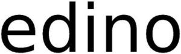

Trade Mark Journal No.2025/018 2 May 2025
WO0000001846315 (1,2,3,4,5,6,7,8,9,10,11,12,13,14,15,16,17,18,19,20,21,22,23,24,25,26,27,28,29,30,31,32,33,34,35)
Office of origin: Poland
Date of International Registration:3 December 2024
Date of designation in the UK:
3 December 2024

International priority date claimed: 26 June 2024
(Poland)
- Class 1
- Filtering materials [chemical, mineral, vegetable and other unprocessed materials]; chemical preparations and materials for film, photography and printing; photographic paper; photographic film, not exposed; unprocessed plastics; adhesives for use in industry; growing media, fertilizers and chemicals for use in agriculture, horticulture and forestry; detergents for use in manufacture and industry; chemical substances, chemical materials and chemical preparations, and natural fertilisers; compositions for fire extinguishing and prevention; chemical compositions and materials for use in science; chemical compositions and materials for use in the manufacture of cosmetics; chemical compositions for use in construction; chemical compositions for water treatment; chemical and organic compositions and substances for treatment of leather and textile; salts for industrial purposes; unprocessed artificial and synthetic resins; starches for use in manufacturing and industry; putties, and fillers and pastes for use in industry; fillers for vehicle body and tyre repair; chemical and organic compositions for use in the manufacture of food and beverages.
- Class 2
- Dyes, colorants, pigments and inks; thinners and thickeners for coatings, dyes and inks; coatings; raw natural resins; raw natural resins; food and beverage colorings; metal in foil and powder form for use in painting, decorating, printing and art; paints; varnishes; preservatives.
- Class 3
- Toiletries; animal grooming preparations; essential oils and aromatic extracts; cleaning and fragrancing preparations, other than for personal use; industrial abrasives; tailors' and cobblers' wax; oral hygiene preparations; perfumery and fragrances; body cleaning and beauty care preparations; make-up; soaps and gels; bath preparations; deodorants and antiperspirants; skin, eye and nail care preparations; hair preparations and treatments; hair removal and shaving preparations; household fragrances; vehicle cleaning preparations; laundry preparations; leather and shoe cleaning and polishing preparations.
- Class 4
- Fuels and illuminants; electrical energy; dust controlling compositions; lubricants and industrial greases, waxes and fluids; wood for use as fuel; non-chemical fuel additives; biofuels; candles; wicks for candles and lamps; preserving oils.
- Class 5
- Dietary supplements and dietetic preparations; dental preparations and articles, and medicated dentifrices; sanitary preparations and articles; pest control preparations and articles; air deodorising and air purifying preparations; fungicides; herbicides; teeth filling material; adhesive plasters; disinfectants; sanitary preparations for medical purposes; food for babies; dietary supplements for animals; disinfectants and antiseptics; absorbent articles for personal hygiene; medicated and sanitising soaps and detergents; live organs and tissues for surgical purposes; diagnostic preparations and materials, for medical and veterinary purposes; pharmaceuticals and natural remedies; medical dressings, plasters and swabs.
- Class 6
- Building and construction materials and elements of metal; unprocessed and semi-processed non-precious metals and their alloys; metal hardware; doors, gates, windows and window coverings of metal; structures and transportable buildings of metal; works of art, ornaments and sculptures made of non-precious metals; containers of metal for storage, transport and packaging; railway material of metal; pipes, tubes and hoses, and fittings therefor, including valves, of metal; nuts, bolts and fasteners, of metal; locks and keys, of metal; welding and soldering materials; molds of metal; cables, wires and chains, of metal; signs and signboards, non-luminous and non-mechanical, of metal; ladders and scaffolding, of metal; vaults and safes, of metal; monuments and memorials made primarily of non-precious metals; packaging, wrapping and bundling articles, of metal; dispensers, of metal.
- Class 7
- Agricultural, earthmoving, construction, oil and gas extraction and mining equipment; agricultural, gardening and forestry machines and apparatus; construction machines; pumps and compressors being parts of machines, motors and engines, and blowers for use with conveying systems; industrial robots; current generators; moving and handling equipment; opening and closing mechanisms; lifting and hoisting equipment, elevators and escalators; conveyors and conveyor belts; packing machines; machines and machine tools for treatment of materials and for manufacturing; cutting, drilling, abrading, sharpening and surface treatment machines and apparatus; mills and crushing machines; shaping and moulding machines; machines, machine tools, and power-operated tools and apparatus, for fastening and joining; filtering machines, separators and centrifuges; coating machines; waste management and recycling machines; printing and bookbinding machines; sewing machines for textiles and leather; material production and processing machines; metal production machines; textile production machines; paper production machines; power drills and bores; power saws; welding and soldering machines and devices; food and beverage processing and preparation machines and apparatus; wheels and tracks for machines; dispensing machines; distribution machines, automatic; spraying machines; sweeping, cleaning, washing and laundering machines; ironing machines and laundry presses; exterior clearing and cleaning machines; emergency and rescue machines and machine tools; chemical processing equipment.
- Class 8
- Hand-operated hygienic and beauty implements for humans and animals; hair styling appliances; body art tools; manicure and pedicure tools; hair cutting and removal implements; razor knives; animal shearing implements; edged and blunt weapons; cutlery, kitchen knives, and cutting implements for kitchen use; hand-operated tools and implements for treatment of materials, and for construction, repair and maintenance; animal slaughtering and butchering implements; agricultural, gardening and landscaping tools; fire tending implements; hand tools for construction, repair and maintenance; hammers, mallets and sledgehammers; fastening and joining tools; cutting, drilling, grinding, sharpening and surface treatment hand tools; lifting tools; emergency and rescue hand tools.
- Class 9
- Antennas and aerials as communications apparatus; encoded, magnetic and smart cards; photocopiers; image scanners; printers; calculators; payment terminals, money dispensing and sorting devices; coin-operated mechanisms; audio devices and radio receivers; display devices, television receivers and film and video devices; signal cables for IT, AV and telecommunication; magnets, magnetizers and demagnetizers; scientific and laboratory devices for treatment using electricity; apparatus, instruments and cables for electricity; apparatus and instruments for accumulating and storing electricity; apparatus and instruments for controlling electricity; photovoltaic apparatus for generating electricity; electrical and electronic components; electric cables and wires; electrical circuits and circuit boards; antennas and aerials as components; optical devices, enhancers and correctors; optical enhancers; lasers; glasses, sunglasses and contact lenses; corrective eyewear; sunglasses; safety, security, protection and signalling devices; alarms and warning equipment; head protection; eye protection; access control devices; signalling apparatus; protective and safety equipment; diving equipment; navigation, guidance, tracking, targeting and map making devices; measuring, detecting, monitoring and controlling devices; testing and quality control devices; measuring devices; time measuring instruments (not including clocks and watches); weight measuring instruments; distance and dimension measuring instruments; speed measuring instruments; temperature measuring instruments; electricity measuring instruments.
- Class 10
- Physical therapy equipment; massage apparatus; physiotherapy and rehabilitation equipment; hearing protection devices; feeding aids and pacifiers; sex aids; medical and veterinary apparatus and instruments; contraceptives, non-chemical; diagnostic, examination, and monitoring equipment; medical imaging apparatus; surgical and wound treating equipment; suture and wound closing materials and products; dental equipment; masks and equipment for artificial respiration; medical furniture and bedding, equipment for moving patients; prosthetics and artificial implants; artificial organs and implants; hearing aids; dental prostheses; clothing, headgear and footwear, braces and supports, for medical purposes; clothing especially for operating rooms, patient examination gowns and orthopaedic footwear; mobility aids.
- Class 11
- Flues and installations for conveying exhaust gases; sun tanning appliances; sanitary installations, water supply and sanitation equipment; water purification, desalination and conditioning installations; sterilization, disinfection and decontamination equipment; sanitary and bathroom installations and plumbing fixtures; decorative fountains, sprinkler and irrigation systems; steam baths, saunas and spas; lighting and lighting reflectors; vehicle lighting and lighting reflectors; cooking, heating, cooling and preservation equipment, for food and beverages; fireplaces; air filtering installations; industrial treatment apparatus and installations; gas cleaners and purifiers; industrial ovens, boilers, burners and furnaces (not for food or beverages); personal heating and drying implements; drying installations; refrigerating and freezing equipment; regulating and safety accessories for water and gas installations; nuclear installations; heating, ventilating, and air conditioning and purification equipment (ambient); air treatment equipment; HVAC systems (heating, ventilation and air conditioning); igniters; burners and heaters for laboratory use; apparatus for heating and steam generating, and fabric steamers, not for industrial purposes; heating elements and filaments; fog and smoke machines.
- Class 12
- Vehicles and conveyances; land vehicles and conveyances; wheelbarrows; mobility conveyances; rail vehicles; air and space vehicles; water vehicles; parts and fittings for vehicles; wheels and tyres, and continuous tracks for vehicles; anti-theft, security and safety devices and equipment for vehicles; parts and fittings for air and space vehicles; parts and fittings for water vehicles; parts and fittings for land vehicles; powertrains, including engines and motors, for land vehicles.
- Class 13
- Explosive substances and devices, other than arms; fireworks; weapons and ammunition; holders, holsters, magazines and cartridges, for weapons and ammunition; fireworks.
- Class 14
- Gemstones, pearls and precious metals, and imitations thereof; jewellery; time instruments; works of art, decorations and sculptures made of precious or semi-precious metals or stones; jewellery boxes and watch boxes; key rings and key chains, and charms therefor; time instruments.
- Class 15
- Musical instruments; keyboard instruments; string instruments; woodwind instruments; percussion instruments; brass instruments; accessories for musical instruments.
- Class 16
- Works of art, ornaments and figurines made of paper or cardboard, and architects' models; modelling materials and artists' materials; arts, crafts and modelling equipment; filtering materials of paper; bags and articles for packaging, wrapping and storage, of paper, cardboard or plastics; printed matter, and stationery and educational supplies; writing and stamping implements; correcting and erasing implements; office machines; printing and bookbinding equipment; instructional and teaching materials; printed books, magazines, newspapers and printed matter; photo albums and collectors' albums; printed matter representing monetary value or for financial purposes; adhesives for stationery or household purposes; paper and cardboard; industrial paper and cardboard; money holders; replicating apparatus.
- Class 17
- Flexible pipes, tubes, hoses and fittings therefor (including valves), and fittings for rigid pipes, all non-metallic; seals, sealants and fillers; waterproofing and moisture proofing articles and materials; insulation and barrier articles and materials; thermal insulation articles and materials; electrical insulation articles and materials; acoustic insulation articles and materials; fire resistant and fire protective materials being fire resistant insulated panels and expansion joint fillers; rubber material for recapping tires; shock-absorbing and packing materials, vibration dampers; works of art, decorations, and sculptures made of asbestos fibres or elastomers; insulating waterproofing membranes and semi-processed synthetic filtering materials; adhesive tapes, strips, bands and films; clutch linings and partly processed brake lining materials; semi-processed plastics, resins, polymers or synthetic fibres other than for textile use; polyester; semi-worked plastic substances; cellulose acetate; glass fibre and glass wool; carbon fibre; resins in extruded form; unprocessed and semi-processed asbestos fibres or elastomers; mineral fibers; elastomers; pipe connectors, non-metallic.
- Class 18
- Umbrellas and parasols; walking sticks; luggage, bags, wallets and carrying bags; imitation leather; animal skins; saddlery, whips and apparel for animals.
- Class 19
- Building and construction materials and elements, not of metal; railway materials, non-metallic; rigid pipes and valves therefor, non-metallic; building and construction materials and elements made of pitch, tar, bitumen or asphalt; building and construction materials and elements made of sand, stone, rock, clay, minerals and concrete; building and construction materials and elements made of wood and artificial wood; doors, gates, windows and window coverings, not of metal; structures and transportable buildings, not of metal; signs and signalling panels, non-luminous and non-mechanical, not of metal; scaffolding, non-metallic; works of art, decorations and sculptures made of stone, bitumen or concrete; monuments and memorials, not of metal; unprocessed and semi-processed stone, clay, bitumen or concrete, or substitutes therefor; pitch, tar, bitumen and asphalt; stone, rock, clay and minerals; semi-processed or artificial wood.
- Class 20
- Mooring buoys, non-metallic; locks and keys, non-metallic; door, gate and window fittings, non-metallic; valves of plastic, other than parts of machines; fasteners, non-metallic; cable fasteners, connectors and holders, non-metallic; pipe fasteners and clips, non-metallic; works of art, decorations and sculptures made of wood, straw, bone, shell, wax, resin, plastics, plaster, or of substitutes for all these materials; furniture; beds, mattresses, pillows and cushions; picture frames; mirrors (silvered glass); indoor blinds, and fittings for curtains and indoor blinds; clothes hangers, clothes stands [furniture] and clothes hooks; bathroom furniture; animal housing and beds; unworked and semi-worked bone, shell, amber, reed, bamboo, rattan or cork, or substitutes for these; containers, and closures and holders therefor, non-metallic; baskets, non-metallic; barrels and casks, non-metallic; coffins and funerary urns; letter boxes, non-metallic; closures for containers, non-metallic; crates and pallets, non-metallic; ladders and movable steps, non-metallic; displays, stands and signage, non-metallic; mannequins and tailors' dummies.
- Class 21
- Works of art, decorations and sculptures made of ceramics or glass; unworked and semi-worked glass, not for building; household utensils for cleaning, brushes and brush-making materials; air fragrancing apparatus; toilet and bathroom cleaning utensils; tableware, cookware and containers; glasses, drinking vessels and barware; piggy banks; cosmetic utensils, dental care kits comprising toothbrushes and dental floss, brushes and sponges for personal hygiene; dental cleaning articles; aquaria and vivaria; devices for pest and vermin control; lint rollers [adhesive] for removing lint from clothing, brushes for cleaning footwear and disposable footwear shine cloths.
- Class 22
- Raw textile fibers and substitutes; padding and stuffing materials; bags and sacks for packaging, storage and transport; sails; nets; ropes, strings, slings, not of metal, for handling loads, and wrapping or binding bands, not of metal; tarpaulins, awnings, tents, and unfitted covers for vehicles and unfitted liners for the cargo area of vehicles [in the nature of a tarp].
- Class 23
- Yarns and threads.
- Class 24
- Woven fabrics; textile goods, and substitutes for textile goods; coverings for furniture; curtains; labels of textile; wall hangings; linens; kitchen and table linens; bed linen and blankets; bath linen; filtering materials of textile.
- Class 25
- Hats; clothing; underwear and nightwear; shoes; parts of clothing, footwear and headgear, namely, cuffs, pockets for clothing, ready-made linings, heels and heelpieces for footwear, cap peaks and hat frames (skeletons).
- Class 26
- Heat adhesive patches for decoration of textile articles [haberdashery], sewing kits and decorative articles for the hair; hair ornaments, hair rollers, hair fastening articles, and false hair; artificial fruit, flowers and vegetables; charms [not jewellery or for keys, rings or chains]; needles and pins for entomology; embroidery; snap fasteners; pins, other than jewellery; needles.
- Class 27
- Floor coverings and artificial ground coverings; carpets, rugs and mats; vehicle mats and carpets; artificial ground coverings; wall and ceiling coverings.
- Class 28
- Sporting and physical exercise equipment; hunting and fishing equipment; swimming jackets; Christmas tree decorations, party novelties and artificial Christmas trees; fairground and playground apparatus; toys, games, and playthings; video game apparatus, arcade games, and amusement machines; table-top games and gambling devices.
- Class 29
- Meat and meat products; fish, seafood and molluscs, not live; dairy products and dairy substitutes; cheese; birds' eggs and egg products; edible oils and fats; processed fruits, fungi, vegetables, nuts and pulses; jellies, jams, compotes, fruit and vegetable spreads; soups and stocks, meat extracts; prepared insects and larvae; sausage skins and imitations thereof.
- Class 30
- Salts, seasonings, flavourings and condiments; savory sauces, chutneys and pastes; chocolate; bread; pastries, cakes, tarts and biscuits (cookies); sweets (candy), candy bars and chewing gum; cereal bars and energy bars; sugars, natural sweeteners, sweet coatings and fillings, bee products, and edible decorations; golden syrup; sweet glazes and fillings; ice creams, frozen yogurts, and sorbets; cooling ice; coffee, teas and cocoa and substitutes therefor; processed grains, starches, and goods made thereof, baking preparations and yeasts; dried and fresh pastas, noodles and dumplings; cereal preparations; rice; flour; breakfast cereals, porridge and grits; yeast and leavening agents; doughs, batters, and mixes therefor.
- Class 31
- Live animals, plants for breeding; agricultural and aquacultural crops, horticulture and forestry products; algae for human or animal consumption; plants and their fresh produce; fresh fruit, nuts, vegetables and herbs; malts and unprocessed cereals; natural turf; flowers; seeds, bulbs and seedlings for planting; trees and forestry products; plant residues (raw materials); fungi; fodder; litter peat; bait, not artificial.
- Class 32
- Beer and non-alcoholic beer; soft drinks; nut and soy based beverages; flavoured carbonated beverages; juices; waters; non-alcoholic preparations for making beverages.
- Class 33
- Alcoholic essences and extracts; alcoholic beverages (except beer); spirits [beverages]; wine; cider; pre-mixed alcoholic beverages.
- Class 34
- Matches; tobacco and tobacco products (including substitutes); cigarettes, cigars, cigarillos and other ready-for-use smoking articles; flavourings for tobacco; articles for use with tobacco; ashtrays; tobacco containers and humidors; lighters for smokers; personal vaporisers and electronic cigarettes, and flavourings and solutions therefor.
- Class 35
- Advertising, marketing and promotional services; public relations services; product demonstrations and product display services; trade show and commercial exhibition services; loyalty, incentive and bonus program services; distribution of advertising, marketing and promotional material; advertising, marketing and promotional consultancy, advisory and assistance services; provision and rental of advertising space, time and media; auctioneering services; rental of vending machines; business assistance, management and administrative services; accountancy, book keeping and auditing; administrative support and data processing services; data processing, systematisation and management; human resources management and recruitment services; business consultancy and advisory services; business analysis and information services, and market research; rental of office machines; administrative processing and organising of mail order services; retail and wholesale services in relation to the following goods: filtering materials [chemical, mineral, vegetable and other unprocessed materials], chemical preparations and materials for films, photography and printing, sensitised paper, photographic films, unexposed, plastics, unprocessed, glue for industrial purposes, growing media, manures and chemical formulations for use in the following fields: agriculture, garden services and forest management, detergents for manufacturing processes and industry, chemical substances, materials and preparations, and natural raw materials, compositions for fire extinguishing and prevention, chemical compositions and materials for use in science, chemical compositions and materials for use in the manufacture of cosmetics, chemical compositions for use in construction, water-purifying chemicals, chemical and organic compositions and substances for treatment of leather and textile, salts for industrial purposes, unprocessed artificial and synthetic resins, starch for manufacturing processes and industrial purposes, putty, fillers and pastes for industrial purposes, filling paste for vehicle bodywork and the repair of tyres, chemical and organic compositions for use in the manufacture of food and beverages; retail and wholesale services in relation to the following goods: dyes, colorants, pigments and inks, thinners and thickeners for paints, dyes and inks, coatings, raw natural resins, food and drink colourings, metal in foil and powder form for use in painting, decorating, printing and works of art, paints and washes, lacquer and varnish, preservative and protective preparations; retail and wholesale services in relation to the following goods: toiletries, animal grooming preparations, essential oils and aromatic extracts, cleaning and fragrancing preparations, other than for personal use, abrasive materials, not for personal use, tailors' and cobblers' wax, oral hygiene preparations, perfumery and fragrances, body cleansing and care preparations, makeup, soaps and gels, bath preparations, deodorants and anti-perspirants, skin, eye and nail care preparations, preparations for the hair, hair removal and shaving preparations, fragrancing preparations for household purposes, vehicle cleaning preparations, detergent soap, preparations for leather cleaning and polishing; retail and wholesale services in relation to the following goods: fuels and illuminants, electrical energy, dust absorbing, lubricants and industrial greases, waxes and fluids, wood for use as fuel, additives (non-chemical) for fuels, bio fuel, candles, lamp wicks for candles and lamps, maintenance oils; retail and wholesale services in relation to the following goods: dietary supplements and dietetic preparations, dental preparations and articles and medicated dentifrices, sanitary preparations and articles, pest control preparations and articles, air deodorising and air purifying preparations, fungicides, herbicides, materials for filling teeth, plasters, disinfectants, sanitary preparations for medical purposes, food for babies, food supplements for animals, disinfectants and antiseptics, absorbent articles for personal hygiene, medicated and sanitising soaps and detergents, organs and live tissue for surgical purposes, diagnostic agents and diagnosis materials for medical and veterinary uses, pharmaceutical and natural medicines, medical dressings, coverings and applicators; retail and wholesale services in relation to the following goods: building and construction materials and elements of metal, unprocessed and semi-processed common metals and related alloys, small items of metal hardware, doors, gates, windows and window coverings of metal, structures and transportable buildings of metal, works of art and decorations, including sculptures, made primarily of non-precious metals, containers, and transport and packaging articles, of metal, materials of metal for railway tracks, metal pipes and metal tubes and hoses of metal and fittings therefor, including the following goods: valves, of metal, screw covers of metal, bolts of metal and fasteners and locks of metal, keys of metal, welding and soldering materials, metal castings, wire of metal, knitting needles of metal and chains of metal, signs and information and advertising displays of metal, ladders and scaffolding, of metal, vaults and safes of metal, monuments and memorials made primarily of non-precious metals, packaging, wrapping and bundling articles, of metal, dispensers, of metal; retail and wholesale services in relation to the following goods: agricultural, earthmoving, construction, oil and gas extraction and mining equipment, agricultural, gardening and forestry machines and apparatus, industrial robots, spraying machines, construction machines, pumps, compressors and fans, electrical power generators, moving and handling equipment, opening and closing mechanisms, lifting and hoisting installations, conveyors and conveyor belts, packaging machines, machines and machine tools for treatment of materials and for manufacturing, cutting, drilling, abrading, sharpening and surface treatment machines and apparatus, mills and crushing machines, moulding machines, machines, machine tools and tools and apparatus (electrically operated) for mounting and joining, filtering machines, separators and centrifuges, coating machines, waste management and recycling machines, printing and bookbinding machines, sewing machines for textiles and leather, machine tools, machines for use in metal production, textile production machines, papermaking machines, power drills and bores, chain saws, welding and soldering machines and devices, food and beverage processing and preparation machines and apparatus, wheels and tracks for machines, automatic dispensers, vending machines, sputtering machines, sweeping, cleaning, washing and laundering machines, ironing machines and pressing machines, exterior clearing and cleaning machines, emergency and rescue machines and machine tools; retail and wholesale services in relation to the following goods: hand-operated hygienic and beauty implements for humans and animals, hair-styling equipment, body art tools, manicure and pedicure implements, utensils for cutting hair and for depilation, shaving cutters, animal shearing implements, edged and blunt weapons, cutlery, kitchen knives, and cutting implements for kitchen use, hand-operated tools and devices for the treatment of materials, building, repairs and maintenance, animal slaughtering and butchering implements, agricultural, gardening and landscaping tools, fire tending implements, hand tools for construction, repair and maintenance, hammers, mallets and sledgehammers, fastening and joining tools, cutting, drilling, grinding, sharpening and surface treatment hand tools, jacks, hand tools for emergency and rescue purposes; retail and wholesale services in relation to the following goods: downloadable and recorded content, computer databases, music, films and other kinds of electronic publications in the form of text and images, recorded on media, software programs, game software, application software, communication, networking and social networking software, software for data and file management and for databases, media and publishing software, office and business applications, artificial intelligence and machine learning software, software for monitoring, analysing, controlling and running physical world operations, system and system support software, and firmware, device and embedded software drivers, operation systems, utility, security and cryptography software, virtual and augmented reality software, web application and server software, content management software, e-commerce and e-payment software; retail and wholesale services in relation to the following goods: information technology and audio-visual, multimedia and photographic devices, communications equipment, equipment for computer networking and data communications, point-to-point communication devices, broadcasting equipment, antennas and aerials as communications apparatus, data storage devices and media, magnetic encoded smart cards, copying apparatus, photocopiers, image scanners, printers, data processing equipment and accessories (electrical and mechanical), calculators, payment terminals, money dispensing and sorting devices, mechanisms for coin-operated apparatus, computers and computer hardware, components and parts for computers, audio/visual and photographic devices, audio devices and radio receivers, display apparatus, television receivers and film and video reproduction apparatus, image capture and development apparatus, signal-conducting cables for IT, AV and telecommunication apparatus, magnets, magnetizers and demagnetizers, scientific and laboratory processing apparatus using electricity, apparatus, instruments and cables for electricity, apparatus and instruments for accumulating and storing electricity, apparatus and instruments for controlling electricity, photovoltaic apparatus for generating electricity, electric and electronic components, electric cables and wires, electrical circuits and printed circuit boards, antennas (component parts); retail and wholesale services in relation to the following goods: optical apparatus, amplifiers and emphasisers, optical amplifiers, laser equipment, fashion spectacles, sunglasses and containers for contact lenses, corrective glasses, sunglasses, safety, security, and signalling devices, alarms and warning equipment, protective helmets, eye protectors, entrance and access control apparatus, signalling apparatus, safety and protective devices, diving equipment, navigation, guidance, tracking, targeting and map-making devices, measuring, detecting, monitoring and controlling devices, testing and quality control equipment, surveying apparatus, chronometric instruments and apparatus (other than clocks and watches), weight measuring instruments and apparatus, instruments for measuring lengths and dimensions, speed measuring instruments and apparatus, temperature gauges, current measuring instruments and apparatus, controller cards and controllers, data loggers and data recorders, sensors, detectors and monitoring instruments, scientific research and laboratory apparatus, teaching apparatus and simulators; retail and wholesale services in relation to the following goods: physiotherapy apparatus, prophylactic devices, physiotherapy and rehabilitation apparatus and instruments, hearing protectors, feeding articles and dummies (teats) for babies, sex aids, medical and veterinary apparatus and instruments, contraceptives, diagnostic, examination, and monitoring apparatus, medical imaging devices, surgical and wound treating apparatus, instruments and devices, suture and wound closing materials and products, dental apparatus and instruments, masks and equipment for artificial respiration, furniture and bedding for medical purposes, equipment for moving patients, artificial limbs and artificial implants, artificial organs and implants, hearing aids, sets of artificial teeth, clothing, headgear and footwear, braces and supports, for medical purposes, clothing, headgear and footwear for medical personnel and patients, mobility aids; retail and wholesale services in relation to the following goods: flues and installations for conveying exhaust gases, tanning apparatus, sanitary installations, water supply and sanitation equipment, water purification, desalination and conditioning installations, sterilising, disinfectant and decontaminating equipment, sanitary and bathroom installations and fixed sanitary installations, decorative fountains, sprinkler and irrigation systems, steam baths, saunas and spas, lighting and light reflectors, vehicle lights and headlights for vehicles, cooking, heating, cooling and preservation equipment, for food and beverages, fireplaces, filters for industrial or household use, industrial treatment apparatus and installations, gas filters and purifiers, industrial ovens, boilers, burners and furnaces (other than for food or beverages), apparatus for processing chemicals, heating and drying instruments for personal use, drying installations and apparatus, refrigerating and freezing installations and apparatus, regulating and safety accessories for water and gas installations, nuclear installations, heating, ventilating, and air conditioning and purification equipment (ambient), air treatment equipment, HVAC (heating, ventilating and air conditioning) systems, lighters, burnishers and immersion heaters for laboratory use, apparatus for heating and steaming items and fabrics not for industrial purposes, heating elements and filaments, fog-making machines and smoke machines; retail and wholesale services in relation to the following goods: vehicles and conveyances, land vehicles and conveyances, push trolleys, mobility aids for the disabled, rail vehicles, air and space vehicles, vehicles for locomotion by water, parts and accessories for means of transport, wheels, tyres and crawler type vehicle track systems for vehicles, anti-theft and safety devices and equipment for vehicles, parts and fittings for air and space vehicles, parts and accessories for vehicles for locomotion by water, parts and fittings for land vehicles, powertrains, including engines and motors, for land vehicles; retail and wholesale services in relation to the following goods: explosive substances and devices, other than arms, pyrotechnic articles, weapons and ammunition, holders, holsters, magazines and cartridges, for weapons and ammunition, fireworks; retail and wholesale services in relation to the following goods: precious stones, pearls, precious metals and imitations thereof, jewels, time instruments, works of art and decorations, including sculptures, made primarily of precious or semi-precious metals or stones, or their imitations, or coated with these, jewellery cases (caskets) and watch boxes, key rings and key chains, and charms therefor, chronometric instruments; retail and wholesale services in relation to the following goods: musical instruments, key board instruments, string instruments, woodwind instruments, percussion instruments, brass instruments, musical accessories; retail and wholesale services in relation to the following goods: works of art and decorations, including figurines, made primarily of paper or cardboard and and architects' models, artistic and modelling materials and supplies, arts, crafts and modelling equipment, filtering materials of paper, bags and articles for packing, packaging and storage, of paper, cardboard and plastic, printings and stationery and educational supplies, writing and stamping implements, corrective and erasing articles, office machines, printing and bookbinding material, instructional and teaching equipment, printed books, printed journals, printed magazines and other printed paper media, photograph albums and collecting albums, printed matter representing monetary value or for financial purposes, adhesive substances for paper or adhesives for domestic use, paper and cardboard, industrial paper and cardboard, money clips; retail and wholesale services in relation to the following goods: flexible pipes, tubes, hoses and fittings therefor (including valves), and fittings for rigid pipes, all non-metallic, seals, sealants and fillers, waterproofing and moisture proofing articles and materials, insulating articles and materials and acoustic barriers, thermal insulation articles and materials, electrical insulation articles and materials, acoustic absorbing articles and materials, fire-resistant and fire preventative articles and materials, tire restoration and repair materials, shock-absorbing and packing materials, vibration dampers, works of art and decorations, including sculptures, made primarily of mineral fibres or elastomers, or of substitutes therefor, membranes and semi-processed synthetic filtering materials, adhesive tapes, strips, bands and films, clutch and brake linings, semi-processed plastics, resins, polymers or synthetic fibres (other than for textile use), or substitutes therefor, polyester, semi-worked plastic substances, cellulose acetate, fibreglass and glass wool, carbon fibers, resins in extruded form, unprocessed and semi-processed mineral fibres or elastomers, or substitutes therefor, mineral fiber, elastomeric materials; retail and wholesale services in relation to the following goods: umbrellas and parasols, canes, walking and trekking sticks, luggage, bags, wallets and other carriers, leather (imitation), animal skins, saddlery, whips and apparel for animals; retail and wholesale services in relation to the following goods: non-metallic building and construction materials and components, railway materials made of metal, not of metal, rigid pipes and valves therefor, non-metallic, building and construction materials and elements made of pitch, tar, bitumen or asphalt, building and construction materials and elements made of sand, stone, rock, clay, minerals and concrete, building and construction materials and elements of wood and artificial wood, doors, gates, windows and window coverings, not of metal, transportable structures and buildings, not of metal, signs, and information and advertising displays, not of metal, scaffolding made of non-metallic materials, works of art and decorations, including sculptures, made primarily of non-metallic mineral materials such as stone, bitumen or concrete, or of substitutes for these, monuments and monuments, not of metal, unprocessed and semi-processed non-metallic mineral materials, for example stone, sound, bitumen or beton or substitutes for all these materials, asphalt, pitch and bitumen, stone, rock, clay and minerals, partially processed timber or artificial timber; retail and wholesale services in relation to the following goods: mooring buoys, non-metallic, locks and keys, non-metallic, door, gate and window fittings, non-metallic, valves, non-metallic, non-metallic fasteners, cable fasteners, connectors and holders, non-metallic, pipe fasteners, connectors and holders, non-metallic, works of art and decorations, including sculptures, made primarily of wood, straw, bone, shell, wax, resin, plastic or plaster, or of substitutes for these, furniture, beds, mattresses, cushions and accent cushions, framing, mirrors [looking glasses], slatted indoor blinds and frames for curtains and slatted indoor blinds, clothes racks, hooks, stands and hangers, bathroom furniture, animal housing and beds, unprocessed and semi-processed bone, shell, amber, reed, bamboo, rattan or cork, or substitutes therefor, containers, and closures and holders therefor, not of metal, baskets, not of metal, barrels and casks, non-metallic, coffins and funerary urns, letter boxes, not of metal, closures (not of metal) for containers, crates and pallets, nonmetallic, ladders and movable steps not of metal, displays, display stands and marking, not of metal, mannequins and tailors' dummies; retail and wholesale services in relation to the following goods: works of art and decorations, including sculptures, made primarily of ceramics or glass, or of substitutes therefor, unworked and semi-worked glass, not for building, household articles for cleaning purposes, brushes and brush-making materials, air-fragrancing apparatus, toilet and bathroom cleaning utensils, tableware, cookware and containers, drinking glasses and vessels and bar equipment, piggy banks, cosmetic, hygiene and beauty care utensils, articles for dental cleaning purposes, aquariums and vivariums, appliances for destroying noxious animals and vermin, articles for treating items of clothing and footwear; retail and wholesale services in relation to the following goods: raw textile fibers and substitutes, cushioning materials and padding materials, bags and sacks for packaging, storage and transport, sails, nets, ropes, strings, straps and bands, tarpaulins, awnings, tents, and unfitted coverings and liners; retail and wholesale services in relation to the following goods: yarns and threads; retail and wholesale services in relation to the following goods: fabrics, loose covers for furniture, curtains for windows, labels of textile, wall hangings of textile, household linen, table linen and kitchen textile articles, bed clothes and blankets, bath articles of textile, filtering materials of textile; retail and wholesale services in relation to the following goods: headgear, articles of clothing, underwear and nightwear, footwear, parts of clothing, footwear and headgear; retail and wholesale services in relation to the following goods: accessories for apparel, sewing articles and decorative textile articles, hair ornaments, hair-curlers, hair fastening articles, and false hair, artificial fruit, flowers and vegetables, hangers (not being jewellery or for keys, rings or chains), needles and pins for entomology, embroidery, buttons, pins, needles; retail and wholesale services in relation to the following goods: materials for covering existing floors and artificial ground covering materials, carpets rugs and mats, carpets for automobiles, artificial ground coverings, wall and ceiling coverings; retail and wholesale services in relation to the following goods: sporting and fitness equipment, hunting and fishing requisites, swim accessories, festive decorations, party novelties and artificial Christmas trees, fairground and playground apparatus, toys, games, playthings and novelties, video game apparatus, arcade games and amusement machines, board games and gambling apparatus; retail and wholesale services in relation to the following goods: meat and meat products, fish, seafood and shellfish (not live), dairy products and dairy substitutes, cheese food preparations, birds' eggs and egg products, edible oils and fats, processed fruits, mushrooms, vegetables, nuts and pulses, jellies, jams, compotes, fruit and vegetable spreads, soups and stocks, meat extracts, processed insects and larvae, natural and artificial sausage casings; retail and wholesale services in relation to the following goods: salts, seasonings, flavourings and condiments, savory sauces, chutneys and pastes, chocolate, bread loaves, pastries, cakes, tarts and biscuits (cookies), candy, candy bars and chewing gum, cereal and energy bars, sugars, natural sweeteners, sweet coatings and fillings, bee products and edible decorations, golden syrup, sweet glazes and fillings, ices, frozen yoghurt and sorbets, ice for cooling purposes, coffee, tea, cocoa and substitutes thereof, processed grains, starches, and goods made thereof, baking preparations and yeasts, dried and fresh pastas, noodles and dumplings, cereal preparations, rice, flour, breakfast cereals, porridge and grits, yeast and food-leavening agents, doughs, batters, and mixes therefor; retail and wholesale services in relation to the following goods: live animals, organisms for breeding, agricultural and aquacultural crops, horticulture and forestry products, algae for human or animal consumption, plants and their fresh produce, fresh fruits, nuts, vegetables and herbs, malts and unprocessed cereals, turf, natural, flowers, seeds for planting, bulbs and seedlings for planting, trees and forestry products, plant waste being raw material, fungi, forage, products for animal litter, bait, not artificial; retail and wholesale services in relation to the following goods: beer and non-alcoholic beer, non-alcoholic drinks, beverages with a base of nuts and soya, flavoured, aerated beverages, juices, waters, non-alcoholic preparations for making beverages; retail and wholesale services in relation to the following goods: alcoholic essences and extracts, alcoholic beverages (except beers), spirits (beverages), wine, cider, pre-mixed alcoholic beverages; retail and wholesale services in relation to the following goods: matches, tobacco and products derived from tobacco including tobacco substitutes, cigarettes, cigars, cigarillos and other ready-for-use smoking articles, flavourings for tobacco, articles for use with tobacco, smoker's ashtrays, tobacco tins and humidors, lighters for smokers, personal vaporizers and electronic cigarettes, and flavourings and solutions thereof; business assistance relating to franchising; advisory services relating to publicity for franchisees; franchising services providing marketing assistance; assistance in product commercialization, within the framework of a franchise contract; business advisory services relating to the establishment and operation of franchises; providing assistance in the management of franchised businesses; services rendered by a franchisor, namely, assistance in the running or management of industrial or commercial enterprises; business management of logistics for others; administration of the business affairs of franchises; provision of assistance [business] in the establishment of franchises; business assistance relating to the establishment of franchises.
"DINO POLSKA" SPÓŁKA AKCYJNA
Representative: Eliza Nowacka, Kancelaria EUPATENT.PL Sp. z o.o.,, ul. Jana Kilińskiego 185, PL-90-348 Łódź, POLAND